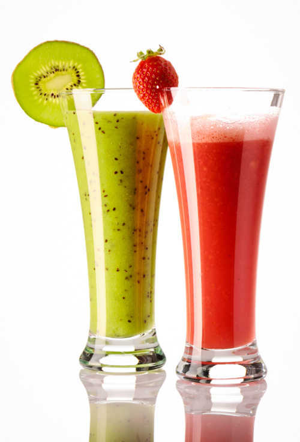
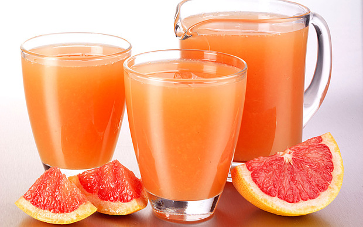
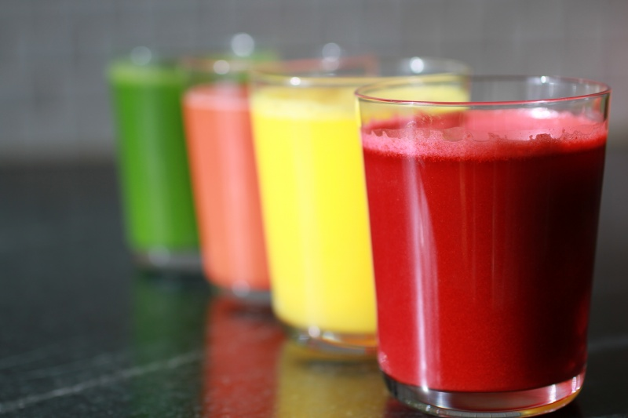
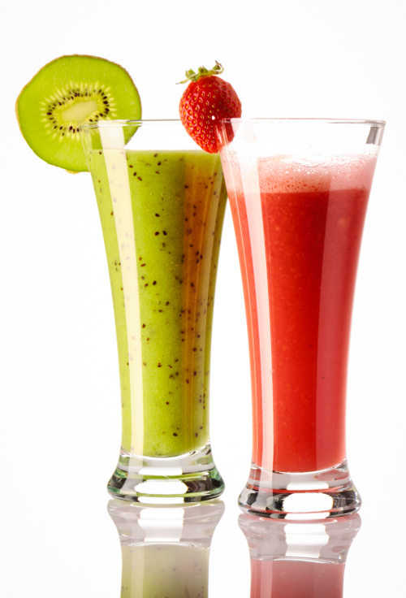
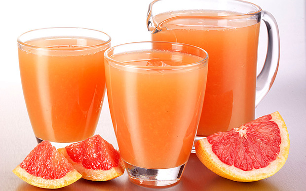
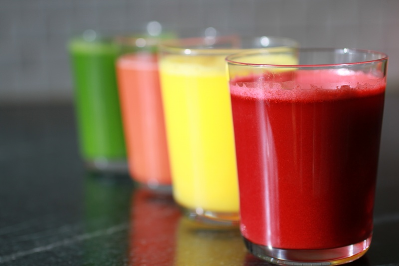

História dos Doces no Brasil
Bem vindo a cafeteria
Do cultivo da cana, do engenho e da senzala, a trajetória dos Doces Brasileiros praticamente começa quando nasce o País. Assim como os personagens João e Maria, que deixavam pequenos pedaços de pão pelo caminho, com o objetivo de não se perderem por entre os caminhos da floresta, se salpicarmos nossa História com nacos de quindins, geleias, compotas ou frutas cristalizadas, certamente trilharemos um fiel e cronológico panorama da formação de nosso povo às mais recentes manifestações da mais refinada confeitaria nacional: o imperador D. Pedro II trocava os afazeres da Corte por um doce de figo tirado do tacho; já Rui Barbosa se derretia por colheradas fartas de doce de batata. E o que dizer de João Goulart e Jorge Amado, verdadeiros adoradores do doce de coco? Sem falar no ex-presidente Juscelino Kubitschek, que nunca recusava uma baba de moça, e nos compositores Roberto Carlos e Chico Buarque, que talvez tenham se inspirado após porções generosas de doce de abóbora.
Com base na história do site Doces Realc.
http://www.docesrealc.com.br/historia_dos_doces.php


 





Tel: (11) 9.1234-4321 | (11) 9.0987-6789
E-mail: cafeteria_que_eu_criei@cafe_online.com.br